11월의 원두
네 가지를 볶습니다. 밝게 볶는 두 가지는 월요일에, 진하게 볶는 두 가지는 목요일에 볶습니다. 볶은 날로부터 사흘째 아침에 진열하고, 그 주 안에 다 팝니다.
-
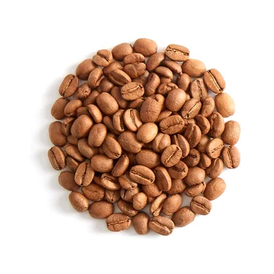
구지
에티오피아 구지, 소농 120가구가 모은 열매
- 가공
- 내추럴
- 볶음
- 아주 밝게
- 볶은 날
- 11월 9일 월요일
- 맛
- 블루베리, 홍차, 말린 자두
200 g 19,000원
12일 목요일부터
-
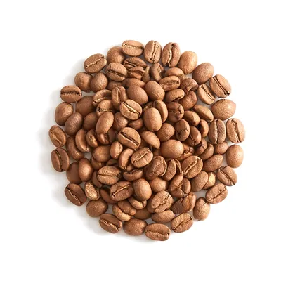
니에리
케냐 니에리, 해발 1,800 m 협동조합
- 가공
- 워시드
- 볶음
- 밝게
- 볶은 날
- 11월 9일 월요일
- 맛
- 자몽, 블랙커런트, 잘 익은 토마토
200 g 21,000원
12일 목요일부터
-
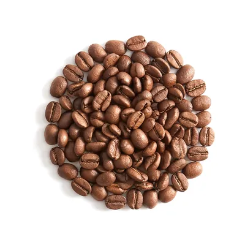
우일라
콜롬비아 우일라, 산비탈 작은 농가들
- 가공
- 워시드
- 볶음
- 중간
- 볶은 날
- 11월 5일 목요일
- 맛
- 귤, 캐러멜, 밀크초콜릿
200 g 16,000원
지금 있습니다
-
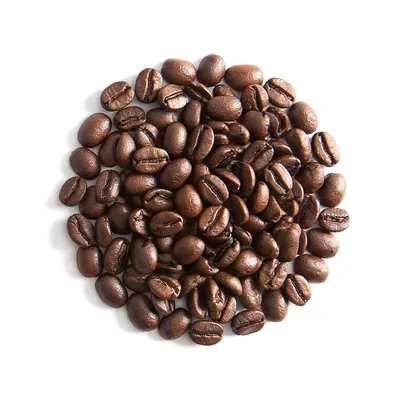
사흘 블렌드
브라질 세하두 70, 콜롬비아 우일라 30
- 가공
- 내추럴과 워시드
- 볶음
- 중간보다 진하게
- 볶은 날
- 11월 5일 목요일
- 맛
- 다크초콜릿, 구운 땅콩, 흑설탕
200 g 14,000원
지금 있습니다
원두는 통째로 팝니다. 갈아 가실 때는 아래 ‘얼마나 곱게 갈까요’의 눈금 숫자로 말씀해 주세요. 한 가지를 한 분께 400 g까지 팝니다.
월요일과 목요일에 볶습니다
갓 볶은 원두는 속에 탄산가스를 품고 있어 물이 고르게 스미지 않습니다. 사흘을 쉬게 하면 가스가 빠지고 맛이 자리를 잡습니다.
그래서 볶은 날에는 팔지 않습니다. 월요일에 볶은 원두는 목요일 아침에, 목요일에 볶은 원두는 일요일 아침에 진열합니다.
- 1진열
- 2볶음
- 3쉬는 날
- 4쉬는 날
- 5볶음
진열 - 6쉬는 날
- 7쉬는 날
- 8진열
- 9볶음
- 10쉬는 날
- 11쉬는 날
- 12볶음
진열 - 13쉬는 날
- 14쉬는 날
- 15진열
- 16볶음
- 17쉬는 날
- 18쉬는 날
- 19볶음
진열 - 20쉬는 날
- 21쉬는 날
- 22진열
- 23볶음
- 24쉬는 날
- 25쉬는 날
- 26볶음
진열 - 27쉬는 날
- 28쉬는 날
- 29진열
- 30볶음
- 볶는 날
- 진열하는 날, 볶고 사흘째
- 원두가 쉬는 날
목요일은 볶는 날이자 월요일에 볶은 원두를 내놓는 날입니다. 카페는 월요일에 쉽니다.
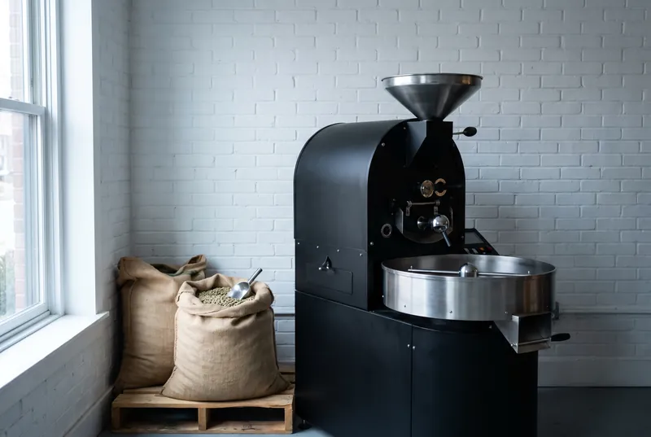
얼마나 곱게 갈까요
원두는 통째로 사 가서 내리기 직전에 가는 것이 가장 좋습니다. 내리는 도구를 고르고 다이얼을 돌려 보세요. 매장 그라인더와 같은 40칸 눈금이고, 한 칸 돌릴 때마다 가루가 약 32 μm씩 굵어집니다.
끌어서 돌리거나, 휠이나 화살표 키로 한 칸씩 돌립니다. 왼쪽이 곱고 오른쪽이 굵습니다.
다이얼을 처음 잡으면 그라인더 소리가 켜집니다.
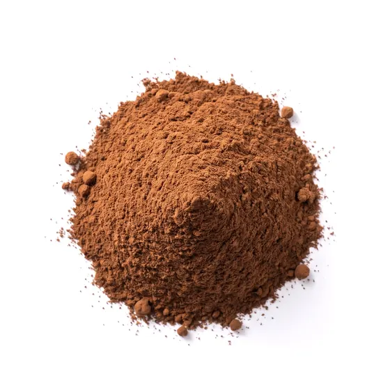
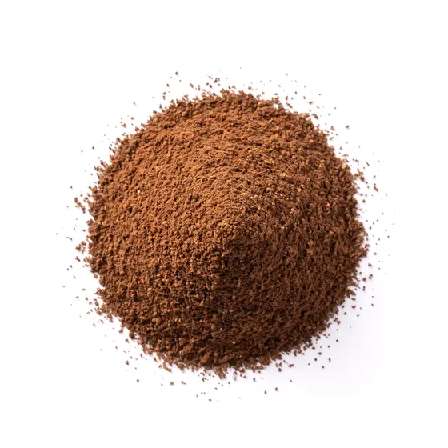
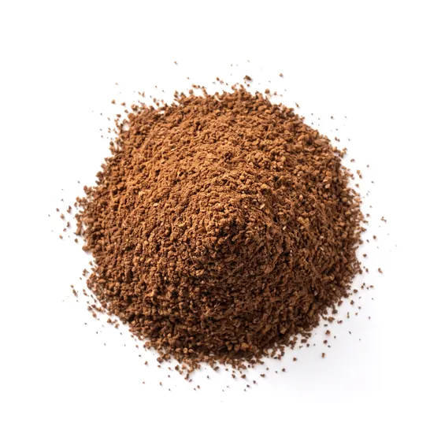
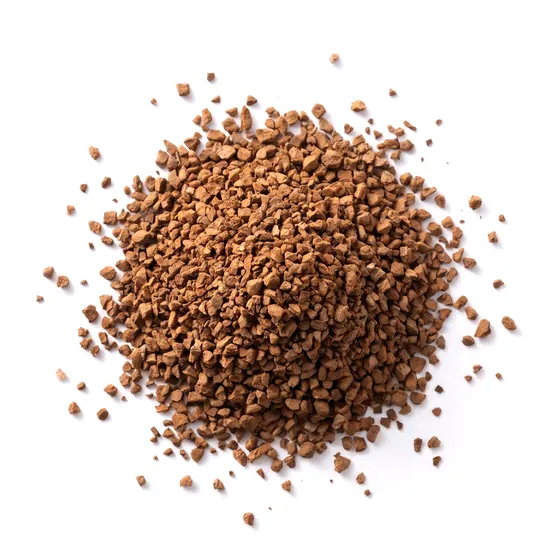
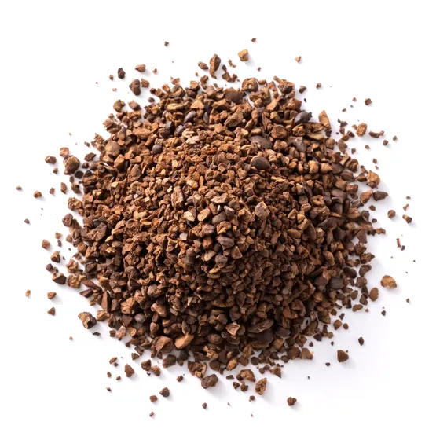
중간, 약 790 μm
핸드드립 한 잔
- 원두
- 15 g
- 물
- 240 g
- 물 온도
- 92°C
- 시간
- 2:45
핸드드립에 맞는 굵기입니다.
뜸을 30초 들이고, 세 번에 나눠 붓습니다.
열 자리 카페
로스터 앞에 바 여섯 자리, 창가에 네 자리가 있습니다. 이번 주에 진열한 원두로만 내립니다.
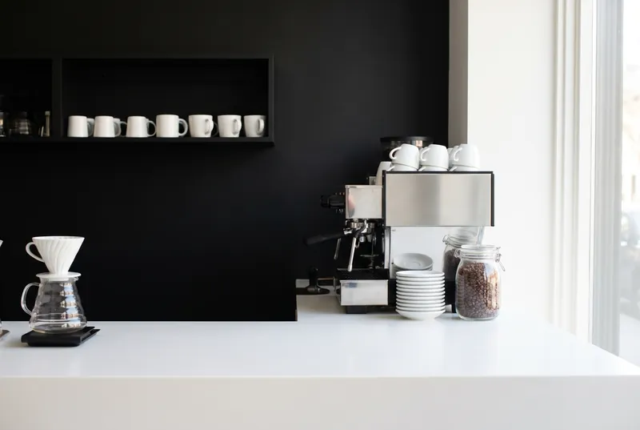
여는 시간
- 화–일
- 8:00–18:00
- 주문 마감
- 17:30
- 월요일
- 쉽니다. 하루 종일 볶습니다
빵은 팔지 않습니다. 가져와 드셔도 됩니다. 콘센트는 바 쪽에 두 개뿐입니다.
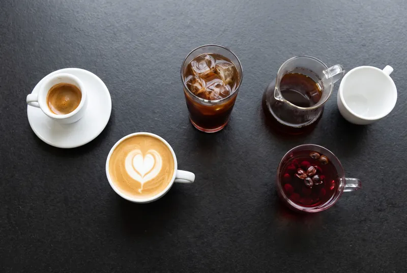
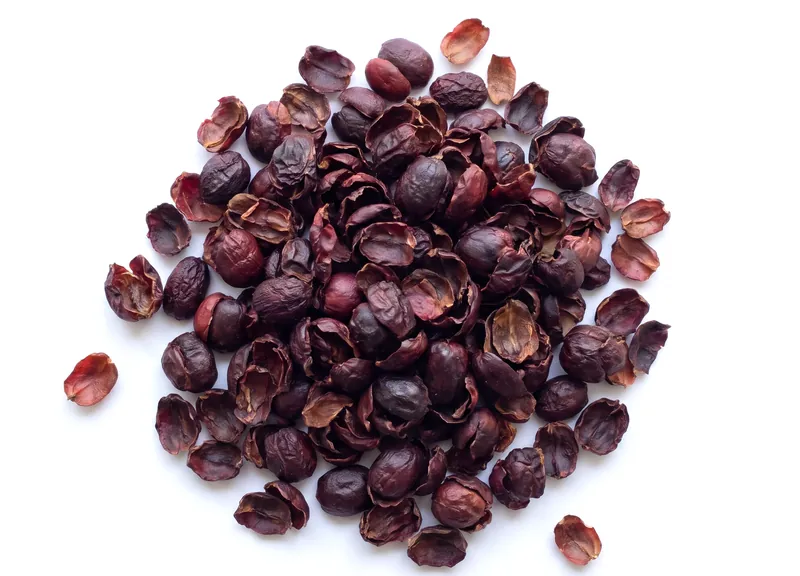
정기 배송
두 주에 한 번, 또는 네 주에 한 번 원두를 부칩니다. 목요일에 볶아 사흘을 쉬게 한 원두를 월요일에 부치니, 받는 날이 마시기 좋은 날입니다.
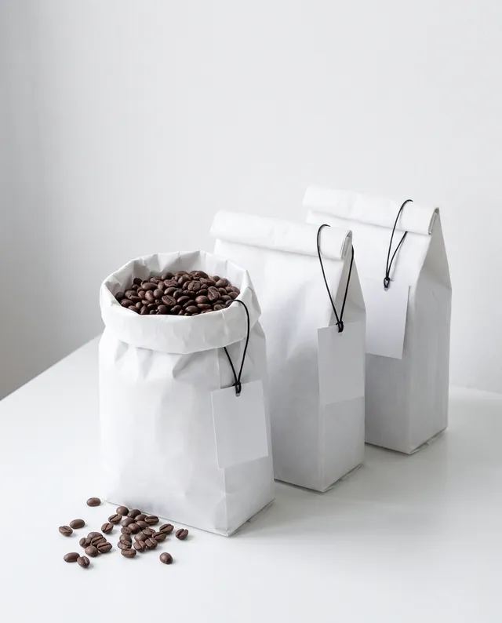
-
로스터에게 맡기기
그 주에 가장 맛이 좋은 원두 한 가지를 고르고, 봉투에 왜 골랐는지 손글씨로 두세 줄 적어 보냅니다.
200 g 한 번에 16,000원
-
고른 원두로
이달의 네 가지 중 하나를 정해 두고 받습니다. 달이 바뀌면 비슷한 원두로 이어 드립니다.
원두값 그대로, 200 g 또는 400 g
- 배송비
- 받지 않습니다
- 주기
- 두 주 또는 네 주. 한 번 건너뛰기, 그만두기는 다음 배송 사흘 전까지 매장에 말씀하시면 됩니다
- 갈아서 받기
- 눈금 숫자를 적어 주세요. 지금 고른 눈금은 20, 핸드드립입니다.
가상 서비스입니다. 이 페이지에서는 신청을 받지 않습니다.
가게에 원두를 댑니다
뭉근시의 카페와 빵집, 사무실에 원두를 보냅니다. 불땀길에서 걸어서 이십 분 안이면 로스터가 직접 들고 갑니다.
- 최소 주문
- 한 주에 2 kg
- 사흘 블렌드
- 1 kg 58,000원
- 싱글 오리진
- 1 kg 70,000원부터
- 첫 달
- 그라인더 눈금과 레시피를 맞추러 두 번 찾아갑니다
- 문의
- 화–금 오후 2–4시, 매장에서 로스터에게. 전화번호는 따로 두지 않습니다
불땀길 7
뭉근시 불땀길 7, 1층가상 서비스입니다. 실제 주소가 아닙니다.
- 뭉근시장 정류장에서 내려 시장 북문 쪽으로 걷습니다.
- 북문 맞은편 골목이 불땀길입니다. 오른쪽 세 번째 집입니다.
- 붉은 셔터가 반쯤 올라가 있으면 연 것입니다. 걸어서 4분.
- 카페
- 화–일 8:00–18:00
- 원두만 사러
- 같은 시간, 월요일에는 문 앞 상자에서
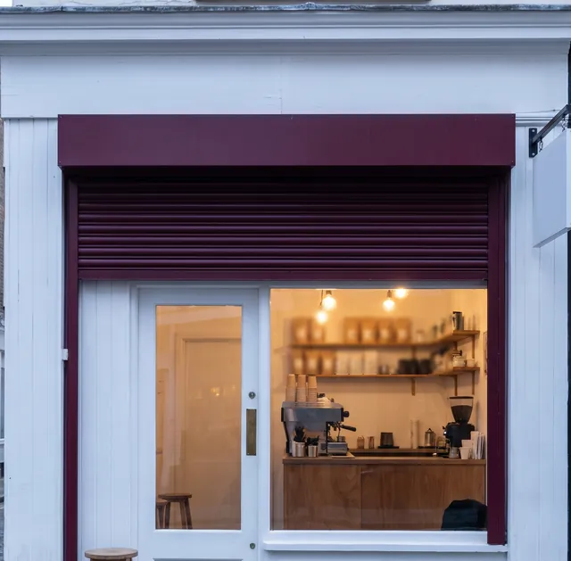